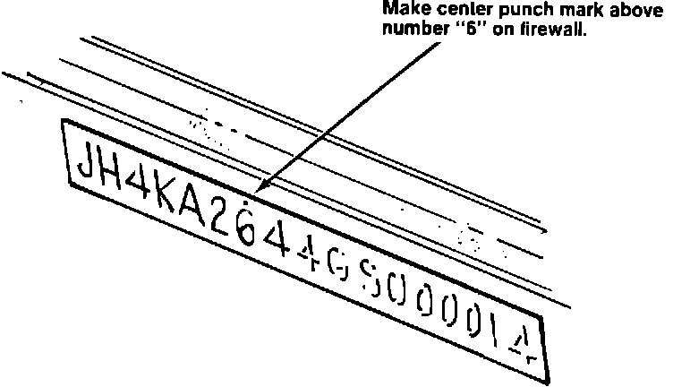

A/T - Countershaft Flange Nut Torque Spec Revision
86acura01August 4, 1986
YEAR MODEL APPLICATION
1986 LEGEND To JH4KA26XXGC004726
86-008
Legend Countershaft Flange Nut
Subject
Legend 4-speed automatic transmission countershaft flange nut torque specification revision.
The Legend 4AT countershaft nut torque spec. has been increased from 9.5 kg-m (70 lb.ft.) to 15 kg-m (110 ft. lb.), beginning with VIN: JH4KA26XXGC004726. To avoid the possibility of countershaft nut loosening at high mileage in earlier vehicles, Acura Division recommends that the countershaft nut be replaced, torqued to 15 kgm (110 ft.lb.), and staked in 2 places. This should be done at the first regular service or other dealer visit.
1. Shift transmission into Park.
2. Drain transmission fluid.
3. Remove left front wheel and left side of splash shield.
4. Remove the left radius rod.
5. Remove the transmission end cover bolts and pull down on the transmission center housing. The motor mounts will flex enough to allow removal and installation of the end cover. Be careful not to damage the feed pipes when removing or replacing the end cover.
NOTE: If the countershaft nut is loose and missing a piece of the flange, the transmission must be disassembled, inspected and repaired as necessary.
6. Install a new countershaft nut (90202-PG4-010). Torque to 15 kg-m (110 ft.lb.). The countershaft nut has left hand threads, Note this torque spec. revision in your Legend Service Manual, p. 14-71, step 51.
7. Stake the counter,shaft nut with a dull, rounded punch in 2 places to a depth of 1.0 mm. Note this revision on p. 14-71, step 52.
8. Clean the mating surfaces and the end cover housing.
9. Install a new gasket (21812-PG4-010) and O-rings (91301-PC9-003) on the transmission center housing. Reinstall the end cover, torque bolts to 1.2 kg-m (9 ft.lb.).
10. Reinstall the radius rod, splash shield and wheel. Torque the lug nuts to 11.0 kg-m (80 ft.lb.). Refill the transmission to the full mark at normal operating temperature.

11. Center punch a completion mark on the firewall above the first number "6" of the VIN.
Parts Information
Part Description Quantity Part Number
23 mm flange nut 1 90202 PG4 010
end cover gasket 1 21812 PG4 010
O-ring 2 91301 PC9 003
ATF (Dextron(R) II only) 4 qts.
Warranty Claim Information
Operation number: 218110
Flat rate time: 1.1 hours Failed P/N: 0
Defect Code: 607
Contention Code: E02